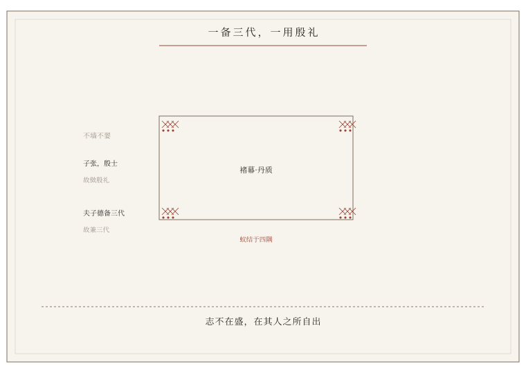

檀弓上 · 三·五十一 · 第 254 课
子张之丧，公明仪为志焉：褚幕丹质，蚁结于四隅，殷士也。注「志亦谓章识」「以丹布幕为褚，葬覆棺，不墙不翣」「殷之蚁结，似今蛇文画」「学于孔子，傚殷礼」。
说什么事：同是「为志」，上一个备三代，这一个只用一代。
落在哪一层：礼，兼及礼器与礼意。论「各以其所得」。
为何编在此位：上节公西赤备三代以尊夫子，此节公明仪用殷礼以尊子张。一备一简，两相对照，乃见「志」不在盛。
【经】子張之喪，公明儀為志焉：褚幕丹質，蟻結於四隅，殷士也。
【注】志亦谓章识。以丹布幕为褚，葬覆棺，不墙不翣。蚁结于四隅，怀嬉之四角，其文如蚁行往来相交错，蚁，蚍蜉也。殷之蚁结，似今蛇文画。殷士也，学于孔子，傚殷礼。
【疏】此一节论孔子弟子送葬车饰学孔子行殷礼之事。公明仪是其弟子，亦如公西赤为章识焉。此公明仪又为曾子弟子，故《祭义》云「公明仪问于曾子曰：夫子可以为孝乎」是也。褚谓覆棺之物，若大夫以上其形似幄，士则无褚；今公明仪尊敬其师，故特为褚，不得为幄，但似幕形，故云「褚幕」，以丹质之布而为之。又于褚之四角画蚍蜉之形，交结往来，故云「蚁结于四隅」。所以不墙不翣者，用殷礼也；所以画蚁者，殷礼士葬之饰也。今公明仪虽尊其师，只用殷法，不墙不翣，唯特加褚幕而已。夫子用三代之礼，不为僣者，用其大夫之礼耳。
公明仪 子张之弟子，又为曾子弟子。
褚幕 注「以丹布幕为褚，葬覆棺」。覆棺之幕。
丹质 以丹色布为质。
蚁结 注「其文如蚁行往来相交错」。四角画蚁形交结。
四隅 幕之四角。
殷士也 注「学于孔子，傚殷礼」。子张是殷之士，故用殷礼。
不墙不翣 注语。不用周之墙、翣。
子张之丧，公明仪为他立标识：以丹色布幕覆棺，幕之四角画蚁形交结——因为子张是殷之士。
此节与上节同题而反。上节公西赤为夫子备三代：墙、翣、披、崇、旐，盛矣。此节公明仪为子张只用殷礼：一褚幕、四角蚁结，简矣。而注两处皆曰「为志」，可见志不在盛。子张殷人，故用殷士之饰；夫子德备三代，故兼三代。同一「尊其师」，而所尊之法各依其人之所自出。此之谓「各以其所得」。
第一层 褚与幕 疏辨最细：褚是覆棺之物，大夫以上其形似幄，士则无褚。今公明仪尊其师，特为褚，而不敢为幄，只似幕形——故曰「褚幕」。此见尊师之限：可以加，不可以越等。
第二层 丹质 以丹布为质，是殷士之制。色亦有等，非可任意。
第三层 蚁结 四角画蚍蜉交结之形。注「殷之蚁结，似今蛇文画」，是以汉时所见为譬。此饰今已不可见，而其义可推：蚁行者，众也；交结者，聚而不散。
第四层 所以不墙不翣 疏「用殷礼也」。周之墙翣皆护柩之具，殷礼无之。不用者，非省，是「傚殷礼」——为其人殷士，故用其族之旧。
与今日何干 同是敬一个人，规格却可高可低。此节给的尺是：尊之者，依其人之所自出与其分之所当，不依我之欲厚。厚其所不当厚，亦是失礼。
| 左 | 右 |
|---|---|
| 公西赤为夫子备三代 | 德备三代文物 |
| 公明仪为子张用殷礼 | 子张殷士，傚其族 |
| 褚幕丹质 | 尊师特加，不敢为幄 |
| 蚁结于四隅 | 殷礼士葬之饰 |
| 不墙不翣 | 用殷礼，非省 |
| 同曰「为志」 | 志不在盛 |
画一处墓前的空地，视点略高。中央一具棺，棺上覆一块丹色布幕，幕的四角各画一组蚁形纹（细密交错的短线）；幕旁没有帷墙、也没有大扇。棺侧立着一位弟子（衣素、一手按幕角）。远处一条土路，路上无人。不写文字、不画人面细节。赭色只用在幕的四角纹样与弟子按幕的指尖。
